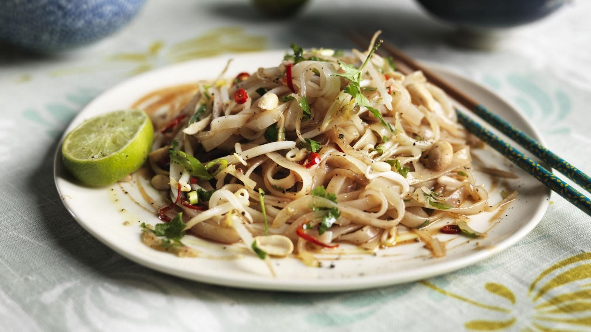

Ken Hom's Vegetable Pad Thai
A fast wok of soaked rice noodles and bean sprouts, stir-fried with chilli, lime

Ingredients
Method
- Soak the 225g flat dried rice noodles in a bowl of hot water for 25 minutes.
- Meanwhile, peel and thinly slice the 100g onions.
- Slice the 4 spring onions at a slight angle into 2.5cm lengths.
- Seed and finely chop the 3 red chillies.
- Drain the soaked noodles well in a colander or sieve, and discard the water.
- Heat a wok over a high heat. Add the 2 tbsp groundnut oil and heat until it is
- Add the onions, spring onions, chillies and **3 tbsp coarsely chopped
- Add the noodles, 3 tbsp fish sauce, 1 tbsp Shaoxing rice wine,
- Stir-fry for 2 minutes, mixing well.
- Add the 225g bean sprouts and stir-fry for 4 minutes.
- Add the coriander and stir-fry briskly for 30 seconds.
- Turn onto a warm platter, sprinkle with the 3 tbsp roasted peanuts and serve
Notes
- Use the light soy sauce rather than the fish sauce to keep it vegetarian, as the source suggests.
- The source's method also slices shallots, which its ingredient list never gives a quantity for. They are left out here rather than guessed at — add a sliced shallot with the onion if you want them.
Source: https://www.bbc.co.uk/food/recipes/stirfryvegetarianpha_70987